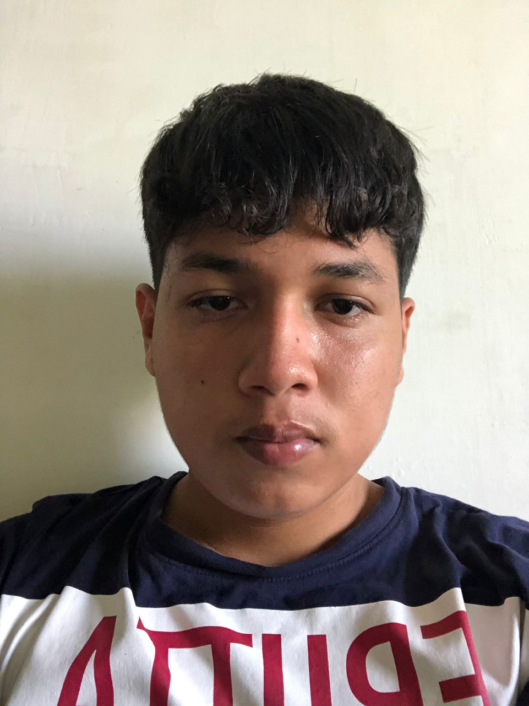
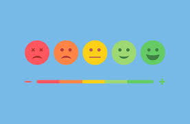
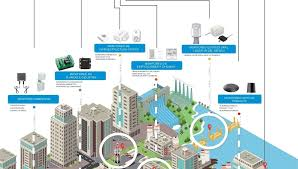

Hola, Bienvenidos todos a mi portafolio personal mi nombre es Ander Sebastián Bustamante García, en esta página se detallan los aspectos que considero importantes en mi vida académica. Soy estudiante de la "Universidad Técnica de Babahoyo" y pertenezco a la carrera de "Sistemas de Información", me encuentro actualmente en tercer semestre y en el transcurso he aprendido muchísimo de las asignaturas que se encuentran en la malla curricular como lo son la programación, física, álgebra lineal, cálculo etc. También destaco la colaboración con mis compañeros participando juntos en varios proyectos. Además de mis estudios me apasiona muchísimo el fútbol y los videojuegos en mis tiempos libres lo práctico junto a mi familia o amigos. Espero seguir adquiriendo muchos conocimientos en este espacio quiero dejar muy en claro mi interés por crecer tanto personal como profesionalmente ¡¡GRACIAS!!
PRESENTACIÓN
SOBRE MI
Hola, soy Ander Sebastián Bustamante García, desde que comencé mi formación, he desarrollado un interés y pasión por la tecnología. Me encanta enfrentar problemas y encontrar soluciones creativas a problemas que pueden llegar a ser complejos. A lo largo de mis estudios, he tenido la oportunidad de participar en diversos proyectos académicos donde he aplicado mis conocimientos en programación y otras asignaturas que van ligadas a la carrera. Cada uno de estos proyectos me ha permitido experimentar nuevas vivencias, y he aprendido la importancia del trabajo en equipo y la colaboración. Además de mi rendimiento académico, puedo corroborar que estas experiencias me han permitido conectar con otros compañeros que comparten mis intereses. También creo firmemente en la importancia de contribuir a la comunidad. Por eso, suelo utilizar mis habilidades para hacer una diferencia en la vida de los demás. Para mí, la tecnología es una herramienta versátil que debe ser utilizada para el bien común, y estoy comprometido a utilizar mis conocimientos para lograrlo. Estoy emocionado por lo que el futuro me depara en el campo de la ingeniería en sistemas y espero poder seguir creciendo y aprendiendo en esta apasionante disciplina.
Habilidades Y Competencias
| CARACTERÍSTICAS DE MI PERSONALIDAD | |
|---|---|
| Empatía | Me esfuerzo por comprender las perspectivas y sentimientos de los demás, lo que me ayuda a construir relaciones sólidas y fomentar un ambiente colaborativo, creo que la empatía es clave para un trabajo en equipo exitoso. |
| Trabajo en Equipo | Disfruto colaborar con otros para alcanzar objetivos comunes. Mi enfoque es escuchar activamente y aportar mis habilidades para contribuir al éxito del grupo, valorando siempre las opiniones de mis compañeros. |
| Creatividad | Me gusta pensar fuera de la caja y encontrar soluciones innovadoras a los problemas. Mi curiosidad me impulsa a explorar nuevas ideas y enfoques, lo que enriquece tanto mis proyectos personales como profesionales. |
| Autonomía | Tengo la capacidad de trabajar de manera independiente, tomando la iniciativa y asumiendo la responsabilidad de mis tareas. Me motiva establecer mis propios objetivos y alcanzarlos con éxito. |
| Capacidad De Aprendizaje | Habilidad para adquirir y aplicar nuevos conocimientos y habilidades de manera efectiva, adaptándose a cambios en el entorno laboral. |
Galería de Proyectos
Plataforma de Análisis de Sentimientos en Redes Sociales
Plataforma que utiliza procesamiento de lenguaje natural para analizar el sentimiento de las publicaciones en redes sociales, ayudando a las marcas a entender las opiniones de los usuarios.
Plataforma de Video Streaming con Transmisión en Vivo
Creación de una plataforma de video streaming que permite la transmisión de eventos en vivo y contenido bajo demanda, con funcionalidades de chat en vivo y recomendaciones personalizadas.

Sistema de Monitoreo IoT para Ciudades Inteligentes
Implementación de un sistema IoT para monitorear variables como calidad del aire y tráfico, recopilando datos mediante sensores en tiempo real para mejorar la gestión urbana.
